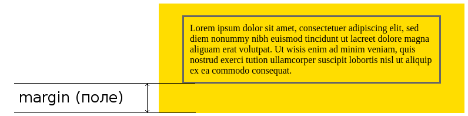
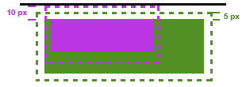

css властивість margin
Властивість margin - встановлює зовнішні відступи (поля) навколо елемента. Таким відступом є простір від грані поточного елемента до внутрішнього краю його батьківського елемента.
Це універсальна властивість і її поведінка залежить від кількості значень. Поведінку властивості margin при різній кількості значень наведено нижче:
Кількість значень Поведінка властивості
1 Поля будуть встановлені для всіх сторін
2 Перше значення встановить відступ зверху та знизу, друге - відступи праворуч та ліворуч.
3 Перше значення встановлює відступ зверху, друге значення одночасно,встановить ліве та праве поле, третє значення - відступ знизу.
4 Послідовно встановить відступи для верхнього, правого, нижнього та лівого країв.
margin - це властивість, яка приймає до чотирьох значень:
.box {
margin: margin-top || margin-right || margin-bottom || margin-left
}
Кожна з властивостейmargin може також приймати значення auto. Значення автоматично в основному повідомляє браузеру, щоб визначити margin для вас. У більшості випадків значення автоматично буде еквівалентно значенню 0 (яке є початковим значенням для кожної властивості margin), або ж будь-який простір доступний на тій стороні елемента.
.container {
width: 980px;
margin: 0 auto;
}
У цьому прикладі робиться дві речі, щоб орієнтувати цей елемент горизонтально у межах доступного простору:
- Елементу задано вказану ширину
- Лівий та правий поля встановлюються автоматично
Без зазначеної ширини значення автоматично не матимуть ніякого ефекту, встановивши лівий та правий поля до 0 або будь-який інший доступний простір всередині батьківського елемента.
Слід також зазначити, що auto корисно тільки для горизонтального центрування, і тому використання auto для верхнього і нижнього полів не буде центрувати елемент по вертикалі.
Нотатка: Якщо елемент не має батька, відступ буде розраховуватись до краю вікна браузера. Пам'ятай, що у вікна браузера теж встановлені відступи. Щоб їх позбутися, слід встановлювати значення margin для елемента 'body' рівним нулю.
Нотатка: Властивість margin може приймати від'ємні значення. Також за допомогою ключового значення auto ми можемо центрувати елементи відносно батьківського блоку:
У блокових елементів розташованих поруч один з одним по вертикалі (margin-top та margin-bottom) спостерігається ефект об'єднання, коли відступи не сумуються, а об'єднуються між собою. Саме об'єднання діє на два і більше блоку (один може бути вкладений всередину іншого) з відступами зверху чи знизу, при цьому примикають відступи комбінуються в один. Для відступів зліва і справа об'єднання ніколи не застосовується. Незважаючи на те, що об'єднуючі поля можуть здаватися, на перший погляд, нелогічними, вони насправді корисні:
- Вони не дозволяють порожнім елементам додавати додатковий, зазвичай небажаний, вертикальний проміжок.
- Вони дозволяють більш простіше керувати відступами на сторінці. Наприклад, заголовки та параграфи зазвичай мають вертикальні поля. Якщо поля не згортатимуться, то відступ між заголовкам та параграфом будуть набагато більшими ніж у параграфів, в такому випадку веб-майстру потрібно буде коригувати їх, щоб досягти однакових вертикальних інтервалів.
-

Для вкладених елементів, дозволяє компенсувати поле для внутрішнього елемента та його батька. На малюнку видно, що поля об'єдналися в одне, розміром 10 px (Найбільше поле, що у внутрішнього елемента). А не сумувалися в 15px. Як видно, в такому випадку дочірній елемент підштовхнув свого батька на 5px вниз.
Схлопування не спрацьовує:
- для елементів, у яких на стороні схлопування задано властивість padding.
- для елементів, у яких на стороні схлопування задана межа;
- на елементах з абсолютним позиціонуванням, тобто таких, у яких position встановлено як absolute;
- на плаваючих елементах (для них властивість float задано як left або right);
- для строкових елементів;
- для 'html'.